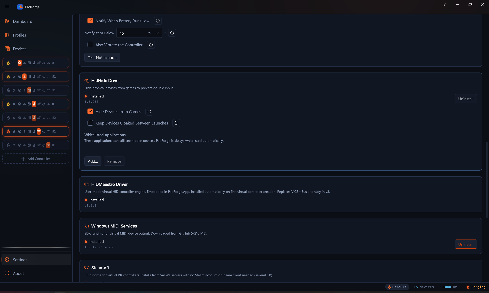

Driver Management¶
PadForge needs one driver (HIDMaestro, which auto-installs the first time you create a virtual controller) and offers two optional ones (HidHide and Windows MIDI Services) that install and uninstall from Settings.

What's required vs optional¶
| Component | Status | What it does |
|---|---|---|
| HIDMaestro | Required for any virtual controller other than Keyboard+Mouse and MIDI. Auto-installs on first use. | Creates the virtual controller that matches each slot's shape (Xbox Series, DualSense, Switch Pro, Logitech wheel, and so on). 225+ device profiles. |
| Keyboard+Mouse | Built in. No driver. | Maps controller inputs to keyboard and mouse presses. |
| HidHide | Optional. Install when games show double input. | Hides physical controllers from games so they only see the virtual ones. |
| Windows MIDI Services | Optional. Install for MIDI input or the MIDI controller type. | Virtual MIDI endpoints for sending notes and CC to DAWs and music software, and the input path that reads a MIDI keyboard as a mapping source. Needs Windows 11 24H2 (build 26100) or later. |
Upgrading from an older PadForge? Older versions needed ViGEmBus and vJoy. HIDMaestro replaces both. If either is still on your PC, PadForge finds it on first launch and offers to remove it (see Legacy driver cleanup).
First-run auto-install¶
HIDMaestro installs itself the first time PadForge creates a virtual controller (any Xbox, PlayStation, Nintendo, or Extended slot). PadForge already runs as administrator, so no extra prompt appears. Install takes a few seconds. No restart. The HIDMaestro card on the Settings page lights up and the Xbox, PlayStation, Nintendo, and Extended slot types turn on.
HidHide and Windows MIDI Services do not auto-install. They sit on the Settings page until you click Install.
Status indicators¶
Each driver card on the Settings page shows an ember flame next to its status text.

| Flame | Meaning |
|---|---|
| Lit flame (orange, glowing) "Installed" | Driver ready. Version number below. |
| Unlit flame (outline only) "Not Installed" | Install before the matching slot type works. |
HIDMaestro auto-installs, so its flame stays lit. The Dashboard shows the same flames as a compact row.
What happens with a driver missing¶
PadForge runs whether or not the optional drivers are installed. Missing drivers only limit the features that need them.
| Missing | What you lose |
|---|---|
| HIDMaestro | It auto-installs on first use, so it isn't normally missing. If that install fails, Xbox, PlayStation, Nintendo, and Extended slots can't create a virtual controller. Keyboard+Mouse and MIDI still work. |
| HidHide | "Hide from games" has no effect. Games may see the physical and the virtual at the same time. |
| MIDI Services | The MIDI slot type won't switch on. Its button stays visible and shows the tooltip "MIDI (requires Windows MIDI Services)". Every other slot type works. |
Admin rights¶
PadForge always runs as administrator. The UAC prompt fires once per launch, when PadForge itself starts. Everything after that (HIDMaestro auto-install, HidHide install and uninstall, Windows MIDI Services install and uninstall, and HidHide whitelist edits) runs inside that same session, so no second prompt appears.
HIDMaestro¶
One driver that publishes the virtual controllers. Each non-MIDI, non-Keyboard+Mouse slot uses one HIDMaestro device profile. A profile decides how the virtual controller looks to Windows and games: its name, its make and model, its buttons and axes, and its force-feedback support.
New in 4.1.0: the Nintendo slot type. It always deploys the Switch Pro profile as-is (no customizing), with Nintendo button lettering, motion passthrough (games read gyro and accelerometer from the virtual pad), and rumble. The other Nintendo profiles (Switch 2 Pro, Joy-Cons, GameCube adapter, NSO retro pads) live in the Extended category.
The 225+ profiles cover¶
- Xbox 360, Xbox One, Xbox Series, Elite, Adaptive
- DualShock 3, DualShock 4, DualSense, DualSense Edge
- Switch Pro, Switch 2 Pro, Joy-Cons (both generations), GameCube adapter, NSO retro pads (N64, SNES, Genesis)
- Logitech G-series wheels (G29, G920, G923, G27)
- Thrustmaster and Fanatec wheels and pedals
- HOTAS and flight sticks (Thrustmaster T-Flight HOTAS, Logitech X52, VKB, VIRPIL, Winwing)
- Hori, 8BitDo, Nacon, Razer, other third-party gamepads
- A Custom profile for the Extended category, with up to 8 axes, 128 buttons, and 4 POV hats.
Install when you want¶
- Any Xbox, PlayStation, Nintendo, or Extended virtual controller
- Force feedback in racing wheels and sticks
- A custom controller shape for niche games
Install¶
HIDMaestro installs itself the first time PadForge creates a virtual controller. The HIDMaestro card on the Settings page is status-only. There is no Install button. Because PadForge already runs as administrator, no extra prompt appears. The flame lights up once install finishes, and Xbox, PlayStation, Nintendo, and Extended slots become available.
Uninstall¶
There is no in-app Uninstall button for HIDMaestro. Removing it through Device Manager is not supported. If you stop using PadForge, deleting the program leaves HIDMaestro installed but idle. It only acts when PadForge asks it to create a virtual controller.
For the contract between PadForge and HIDMaestro, see HIDMaestro Deep Dive.
HidHide¶
Hides physical controllers from apps so games only see PadForge's virtual ones. Fixes the "double input" problem where every press counts twice because games detect the real pad and the virtual one at the same time.
Install when you see¶
- Button presses counting twice
- Menus scrolling at double speed
- Jerky or doubled character movement
- Two controllers in a game when only one is plugged in
- Games auto-picking the wrong controller
Installing it before any of these show up is a fine plan.
How PadForge drives HidHide¶
PadForge runs HidHide on its own. You do not need the HidHide Configuration Client.
| Feature | Detail |
|---|---|
| Per-device hiding | Toggle Hide from games on each device card (Devices page). |
| Automatic whitelist | PadForge adds itself so it can still read hidden controllers. The entry stays in the driver's whitelist between sessions. Harmless, and it keeps hidden controllers readable when Keep devices cloaked between launches is on. |
| Engine-aware | By default, hiding holds only while the engine runs. Stop the engine or close PadForge and the controllers reappear. |
| Master switch | Settings > HidHide Driver > Hide devices from games (global on/off). Turning it off mid-session unhides every controller right away. |
| Keep devices cloaked between launches | Settings > HidHide Driver checkbox, off by default. Leaves physical controllers hidden even while PadForge is closed. Turn it on when another app (Steam, for example) scans for controllers between PadForge sessions and should keep seeing only the virtual ones. |
Whitelist¶
Other controller utilities (Steam Input, for example) need their own whitelist entry to see hidden controllers.
- Add... browses for an .exe.
- Remove drops the selected entry.
Install steps¶
- Open Settings. Scroll to HidHide Driver.
- Click Install. The installer runs inside PadForge's session, which is already running as administrator, so no extra prompt appears.
- A restart may be needed for full effect. Restart if hiding does not work right away.
Uninstall steps¶
- Turn off Hide from games on every device. Uninstall stays disabled while any device has hiding on.
- Open Settings. Scroll to HidHide Driver.
- Click Uninstall. It runs inside the same administrator session, so no extra prompt appears.
Every physical controller becomes visible again the moment the driver leaves.
Windows MIDI Services¶
System-wide virtual MIDI endpoint (named "PadForge MIDI 1", "PadForge MIDI 2", and so on for each MIDI slot) that any music app can subscribe to. Turns a gamepad into a MIDI controller. No loopMIDI bridge needed.
Install for¶
- Driving a DAW (Ableton Live, FL Studio, Reaper) from a gamepad
- Playing MIDI notes from controller buttons during a live set
- Sending MIDI CC from sticks and triggers to synth parameters
- Feeding VJ or stage-lighting software that takes MIDI
- Mapping a MIDI keyboard or control surface as an input (see MIDI Input)
Windows version¶
Needs Windows 11 24H2 (build 26100) or later. On older Windows the Install button stays disabled.
Install steps¶
- Open Settings. Scroll to Windows MIDI Services.
- Click Install.
- PadForge downloads the installer from GitHub (around 210 MB). A progress overlay appears.
- The installer runs on its own. The flame lights up when it finishes.
Uninstall steps¶
- Delete or retype every MIDI slot on the Dashboard.
- Open Settings. Scroll to Windows MIDI Services.
- Click Uninstall.
Legacy driver cleanup¶
Older PadForge versions needed ViGEmBus and vJoy. HIDMaestro replaces both. If either is still on your PC, PadForge finds it on first launch and offers to remove it.
| Button | What happens |
|---|---|
| Uninstall | PadForge removes the drivers it found. Reboot when prompted. |
| Keep | The dialog closes. The old drivers stay installed. They will not interfere with HIDMaestro, but they take up space. |
The dialog appears once. After you pick either button, it does not come back on later launches.
Compatibility matrix¶
| Driver / Service | Windows 10 (x64) | Windows 11 (x64) | Windows 11 24H2+ (x64) | ARM64 | x86 (32-bit) |
|---|---|---|---|---|---|
| HIDMaestro | Yes | Yes | Yes | * | No |
| HidHide | Yes | Yes | Yes | No | No |
| Windows MIDI Services | No | No | Yes | No | No |
| Keyboard+Mouse (no driver) | Yes | Yes | Yes | Yes | No |
- HIDMaestro runs in user mode, so it installs with no reboot. ARM64 support tracks the HIDMaestro project. Check the HIDMaestro releases for current status.
- HidHide is an x64 kernel driver. It does not run on ARM64 (Snapdragon laptops) or 32-bit Windows.
- Windows MIDI Services needs Windows 11 24H2 (build 26100)+. The Install button auto-disables on older Windows.
- Keyboard+Mouse needs no driver. It works on any 64-bit Windows that runs PadForge.
- PadForge itself is a 64-bit app. It runs on 64-bit Windows 10 and 11. It does not run on 32-bit Windows.
Uninstall guards¶
PadForge blocks driver removal while a slot still needs it.
| Driver | Uninstall blocked when |
|---|---|
| HidHide | Any device has "Hide from games" on. |
| MIDI Services | Any MIDI slot exists. |
Delete the slots or turn the feature off. Then Uninstall becomes available. (HIDMaestro has no Uninstall button, so it needs no guard.)
Trouble¶
Install issues¶
| Problem | Fix |
|---|---|
| Click Install and nothing happens | An earlier installer run may still be in progress, or the launch failed quietly. No UAC prompt is involved (PadForge already runs as administrator). Wait a few seconds and retry. If it still does nothing, restart PadForge and try again. |
| Flame stays unlit after install | Retry. If it still fails, restart the PC and retry. |
| HIDMaestro fails to install | An old ViGEmBus or vJoy install can leave leftovers behind. Remove them from Windows Settings > Apps > Installed apps, then restart PadForge. |
| MIDI Services download fails | Check the internet connection. PadForge pulls about 210 MB from GitHub. |
| MIDI Install button disabled | Needs Windows 11 24H2 (build 26100)+. Check Settings > System > About in Windows. |
Runtime issues¶
| Problem | Fix |
|---|---|
| Xbox / PlayStation / Nintendo / Extended slot picked but no virtual controller appears | HIDMaestro auto-installs on first use. If that install failed, see "HIDMaestro fails to install" under Install issues above. |
| Clicking the MIDI slot type does nothing, and its tooltip reads "MIDI (requires Windows MIDI Services)" | Install MIDI Services (needs Windows 11 24H2+). |
| UAC prompt on every launch | Expected. PadForge needs administrator rights to drive its drivers, so Windows asks at startup. Everything after that runs without a second prompt. |
| Double input (every press counts twice) | Install HidHide. Turn on Hide from games for the physical controller on the Devices page. |
| Double input still there after HidHide | Restart the game. Some games only detect controllers at launch. Restart the PC if the install was new. |
| Virtual controller shows up but games do not see it | Restart the game once after PadForge is running. Some games and Steam only detect controllers at launch. |
| HIDMaestro slot stuck on "Initializing" | Give it a few seconds. If it never finishes, check the inactivity timeout under Settings. A slot whose devices go offline drops its virtual controller after that timeout. The slot itself stays and comes back when the devices return. |
Driver conflicts¶
| Problem | Fix |
|---|---|
| HidHide hides controllers from other apps | Add those apps to the whitelist on the Settings page (see HidHide Whitelisted Applications). |
| Antivirus flags a driver installer | HIDMaestro and HidHide are open-source, signed drivers. Add an exception or pause real-time scanning during install. |
Related pages¶
- Installation: first-time setup and driver install.
- Settings: where the driver cards live.
- Dashboard: at-a-glance driver status.
- Controller Slots: which driver each slot type needs.
- Devices: per-device hiding with HidHide.
- HIDMaestro Deep Dive: how PadForge talks to HIDMaestro.
- Troubleshooting: more help.
Last updated for PadForge 4.1.0.